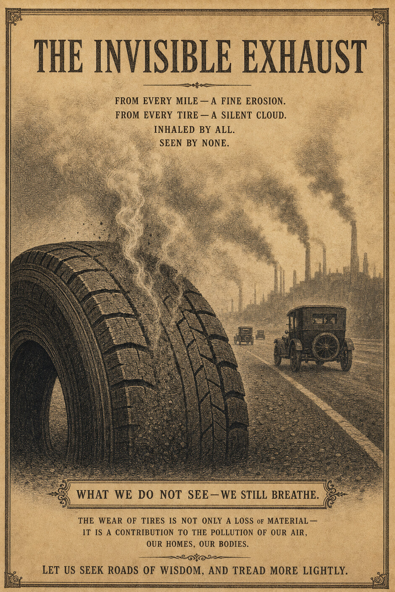

El neumático es el nuevo cigarrillo
Por qué el desgaste de los neumáticos es la mayor fuente de microplásticos — y por qué actuamos como si fuera la presión de los neumáticos
Jacobus van Merksteijn · Malta, junio de 2026
La mayoría de la gente, al pensar en la contaminación por plástico, piensa en bolsas, pajitas y vasos de un solo uso. Mientras tanto, cada coche — incluso el eléctrico — circula como una fábrica de plástico invisible sobre el asfalto. Según estimaciones de institutos como el RIVM y el TNO neerlandeses, el desgaste de los neumáticos es hoy la mayor fuente de microplásticos en nuestro medio ambiente, con muchos miles de toneladas al año solo en los Países Bajos. Estas partículas terminan en el aire que respiramos, en las zanjas y ríos junto a las carreteras, y finalmente en el mar y en las cadenas alimentarias.
Sin embargo, las campañas gubernamentales dirigen al público sobre todo hacia la gasolinera, para comprobar la presión de los neumáticos. “Dale aire a tus neumáticos”, se dice, con énfasis en el ahorro de combustible y la seguridad vial. Útil, pero es como si con los cigarrillos se hablara sobre todo de fumar fuera para que las cortinas huelan menos. El núcleo del problema permanece intacto: el producto en sí. El neumático tal como es habitual hoy — un producto de un solo uso con una vida útil de aproximadamente 40.000–50.000 kilómetros — pertenece a un siglo anterior.
Quien coloca las cifras una junto a otra difícilmente puede sostener que se trata de un fenómeno marginal. Anualmente se liberan hasta unas 19.000 toneladas de microplásticos por el desgaste de neumáticos; casi dos tercios de ello llega al suelo y al agua. Las partículas son tan pequeñas que no son visibles, pero son medibles en todas partes: en el lodo de las cunetas, en el drenaje de agua junto a las autopistas, y en los alrededores de las ciudades. A diferencia de la basura dispersa, no existe una simple operación de limpieza con pinzas y bolsas de basura. Lo que una vez se ha desgastado y dispersado por el viento es prácticamente imposible de recuperar.
No es un plástico neutro
Además, estas partículas de desgaste no son un plástico neutro. Llevan consigo un cóctel de aditivos: sustancias que mantienen el caucho flexible, retrasan el envejecimiento y protegen el neumático de los rayos UV y el ozono. Precisamente esas sustancias permiten que los neumáticos soporten las fuerzas extremas y los cambios de temperatura del pavimento. Pero en cuanto llegan al aire y al agua como partículas finas, se convierten en potenciales mezclas tóxicas para las personas y la naturaleza. Los investigadores advierten que tales mezclas pueden alterar el desarrollo de los peces y que la exposición prolongada en humanos puede contribuir a problemas de salud.
En barrios cercanos a autopistas concurridas, los servicios de salud llevan tiempo observando que, en promedio, los niños obtienen peores resultados en función pulmonar y a veces también en pruebas cognitivas que sus compañeros en zonas más tranquilas. El papel de las partículas finas relacionadas con el tráfico — procedentes de los gases de escape, los frenos y los neumáticos — es evidente, aunque la distribución exacta por fuente sea compleja. Así ocurre algo que socialmente ya no se aceptaría con el tabaco: un producto del que se sabe que emite continuamente partículas nocivas queda fuera de foco mientras el usuario se mantenga “dentro de las reglas”.
Los vacíos en REACH
La Unión Europea cuenta, entretanto, con REACH, una de las normativas químicas más estrictas del mundo. Bajo ese paraguas se limitan o prohíben paso a paso las sustancias peligrosas, y recientemente han llegado normas adicionales para sacar del mercado los microplásticos añadidos deliberadamente — como los microgránulos exfoliantes y los brillantinas. Son buenas noticias para las duchas y el maquillaje, pero en el caso de los neumáticos este enfoque solo funciona de forma indirecta. Aquí no se trata de partículas de plástico añadidas deliberadamente a un producto en una fábrica, sino de partículas que se generan por el uso: al frenar, acelerar y tomar curvas.
En la práctica, REACH obliga sobre todo a los fabricantes a sustituir ciertos aditivos por alternativas menos peligrosas. Eso cuesta tiempo y dinero, y las primeras generaciones de nuevas mezclas rara vez alcanzan de inmediato el mismo rendimiento que las anteriores. La tentación de centrarse en el mero cumplimiento es grande: lo justo para satisfacer las reglas, sin alargar sustancialmente la vida útil ni reducir drásticamente el desgaste por kilómetro. Mientras no exista una norma para las emisiones de microplásticos por kilómetro, ni se imponga una vida útil mínima, un neumático puede volverse más limpio químicamente sobre el papel, pero en la práctica durar menos y aportar más masa al medio ambiente.
También la responsabilidad del productor está definida de forma estrecha. Para los neumáticos ya existe un sistema en el que fabricantes e importadores deben contribuir a la recogida y el reciclaje de los neumáticos desechados. El neumático viejo como residuo visible queda así regulado. Pero las toneladas de microplásticos de desgaste que se liberan durante toda la vida útil quedan fuera de estos modelos de cálculo. Los costes de ello — en depuración de agua, restauración de la naturaleza y salud — recaen sobre la sociedad, no sobre el fabricante o el vendedor. El incentivo para fabricar un neumático que dure más y se desgaste menos es, por tanto, mínimo.
La industria del tabaco como espejo
Quien reconoce este patrón piensa rápidamente en las estrategias de la industria del tabaco. También allí, durante décadas, se destacaron medidas periféricas: filtros, ventilación y salas para fumadores. Al fumador individual se le transmitía el mensaje: fuma con conciencia, fuma menos, fuma fuera. Ahora se observa en los neumáticos un reflejo similar: campañas sobre la presión de los neumáticos, medidas de infraestructura junto a las autopistas, y quizás alguna etiqueta adicional aquí y allá. Pero el neumático en sí sigue siendo, en esencia, el mismo producto de un solo uso, con la misma lógica de desgaste que hace décadas.
La ironía es que las soluciones tecnológicas ya van mucho más adelantadas que las normas. En programas de investigación, patentes y prototipos aparecen neumáticos que duran considerablemente más que los 40.000 kilómetros para los que se diseña, en términos generales, la mayoría de los neumáticos de consumo. Los fabricantes experimentan con estructuras sin aire, con bandas de rodadura impresas en 3D, y con combinaciones de componentes de caucho de base biomásica y polímeros avanzados. Existen conceptos que consideran la banda de rodadura como una capa de desgaste y la estructura portante como una plataforma que dura mucho más tiempo — precisamente la inversión necesaria para reducir drásticamente las emisiones de microplásticos por kilómetro.
Sin embargo, estos neumáticos no aparecen masivamente en el mercado. No porque sea físicamente imposible, sino porque las actuales reglas económicas y jurídicas no lo recompensan. Un neumático que dura veinte años y genera mucho menos desgaste perturba una industria organizada en torno a la sustitución regular y a un determinado nivel de coste por kilómetro. Sin normas para las emisiones y la vida útil, ese neumático sigue siendo una opción de nicho en lugar del estándar. Y sin métodos de medición sistemáticos y etiquetas de microplásticos por kilómetro, los consumidores siguen sin poder ver las diferencias.
Europa se adelanta a sí misma
Europa corre así el riesgo de quedarse atrás. Mientras las fábricas de neumáticos clásicas en Europa Occidental cierran y la producción se traslada a países con costes más bajos, el mercado europeo se convierte cada vez más en un destino de venta para neumáticos convencionales procedentes de otros lugares. Las normas más estrictas rigen aquí en los márgenes, pero la innovación central — el salto hacia neumáticos regenerativos y de bajas emisiones — puede terminar aterrizando igualmente en otras regiones, donde grandes fabricantes de automóviles y propietarios de flotas están más dispuestos a dar el paso hacia nuevos modelos. Entonces Europa se convertirá en cliente del neumático del futuro, no en su creador.
El neumático del futuro ya no es un producto de un solo uso, sino una plataforma. Dura más que el propio coche en el que se monta. Su banda de rodadura no es una capa fija y única, sino una función renovable: algo que se reimprime, se sustituye o se regenera, sin desperdiciar la carcasa. El neumático del futuro está diseñado para emitir la menor cantidad posible de microplásticos, y para que las partículas que sí se generan sean químicamente lo más inocuas posible.
La pregunta no es si tal neumático llegará. Esa pregunta lleva mucho tiempo respondida en laboratorios, en patentes y en silenciosos proyectos piloto. La pregunta real es cuánto tiempo más se aceptará que el neumático de ayer sea la norma en la carretera. Cuántas generaciones de niños seguirán creciendo junto a las autopistas con polvo de plástico en su entorno. Cuántas toneladas de microplásticos seguirán desapareciendo en zanjas y mares antes de que se reconozca que esto no es un efecto secundario inevitable, sino una elección política.
Lo que se necesita ahora
Si esa elección debe cambiar de rumbo, son concebibles algunos pasos simples:
- Establecer una emisión máxima de microplásticos por kilómetro para los neumáticos nuevos, tal como existen normas de CO₂ para los coches.
- Ampliar la responsabilidad del productor a las emisiones de desgaste, de modo que un neumático que emita la mitad de partículas resulte también efectivamente más barato en tasas que uno que contamine más.
- Hacer obligatorio que una etiqueta de neumático no solo muestre la resistencia a la rodadura y el agarre en mojado, sino también una indicación de la vida útil y las emisiones de microplásticos por 1.000 kilómetros.
- Reservar espacio en la normativa para neumáticos que sean fundamentalmente distintos — regenerativos, impresos, basados en plataformas — en lugar de encajarlos en el mismo molde que el producto de ayer.
Quien hoy circula en coche por la autopista no ve nada de todo esto. Ni advertencia, ni filtro, ni equipo de limpieza. Solo asfalto, líneas blancas y una lluvia silenciosa de partículas invisibles. Es hora de admitir que el neumático ya no es un componente evidente y neutro, sino una elección política. El cigarrillo que aún no se atreve a llamarse así.

Jacobus van Merksteijn
Redactor jefe de Het Open Vizier. Emprendedor, desarrollador de innovaciones industriales y de gobernanza (Carbon-Alert Ltd, TerraClean Ltd, GuardSkin Ltd). Escribe sobre cuestiones sistémicas económicas, ecológicas y políticas desde la experiencia con la maquinaria de toma de decisiones de Bruselas y La Haya.